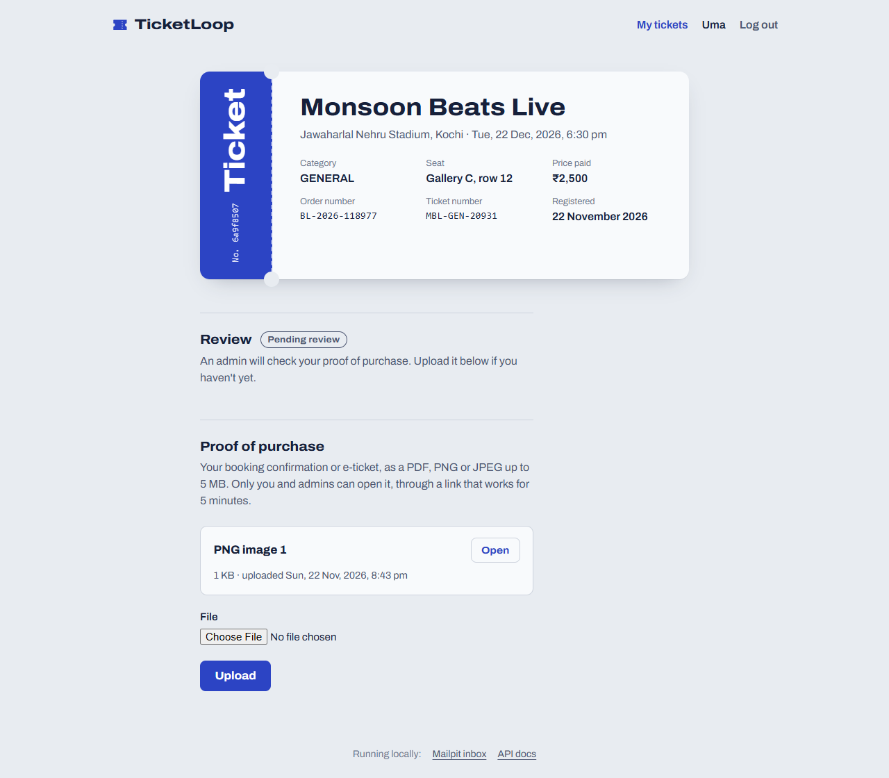
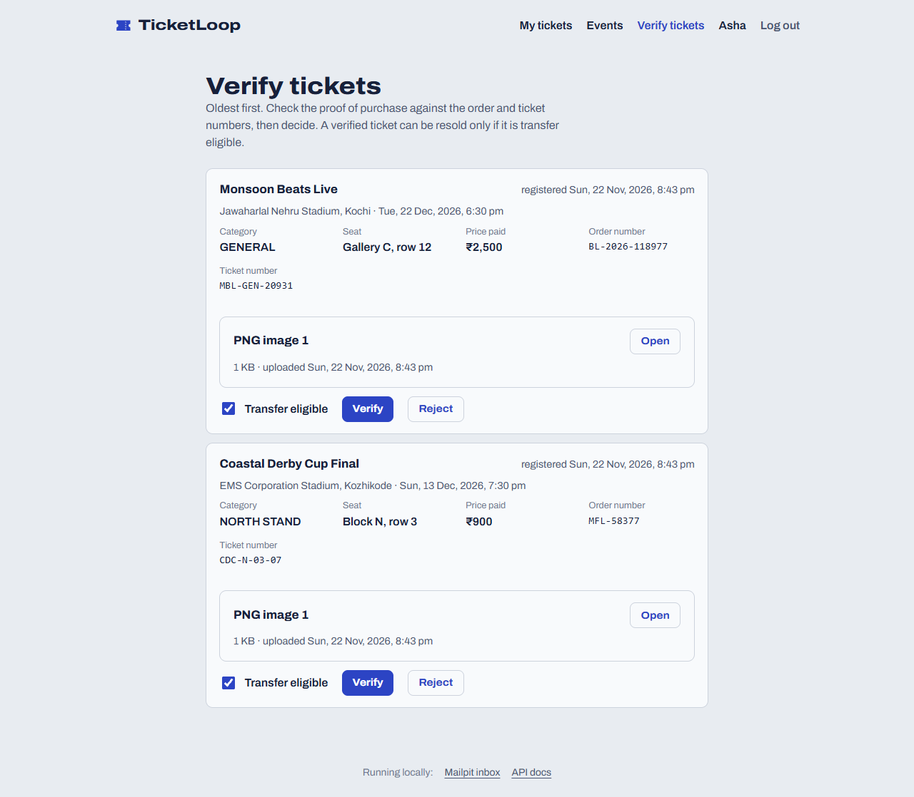
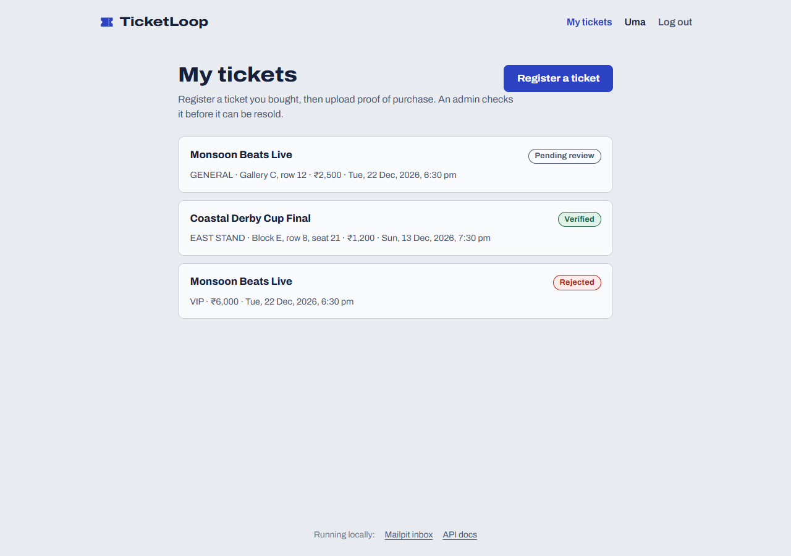
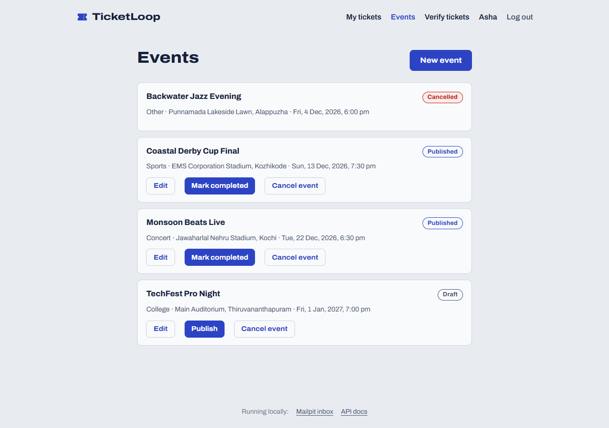

The 30-second answer
An admin creates an event as a draft and publishes it. A user registers a ticket they bought for it, with the order and ticket numbers, and uploads a receipt or e-ticket. An admin looks at the evidence and verifies or rejects the ticket. Only a verified, transfer-eligible ticket will be sellable in M5.
The files sit in a private bucket under random keys. The API never streams them: it checks who is asking, then hands back a presigned link that works for 5 minutes. I decide a file's type from its first bytes, not its name, and refuse an oversized request before anything reads its body.
Every route that takes a ticket ID goes through one function, so "not yours" and "doesn't exist" give byte-for-byte the same 404. A test lists every such route from the app's own schema. It fails if someone adds a ticket route without adding it to the IDOR checks.
What I built
- EventsPublic
GET /eventsand/events/{id}(published only); admin list, create andPATCH. The status machine allowsDRAFT → PUBLISHEDonly while the start is in the future andPUBLISHED → COMPLETEDonly once it has passed;CANCELLEDandCOMPLETEDare final. Each change is one conditional UPDATE.app/modules/events/ - Ticket providersAdmin list and create. The migration seeds
fakeprovider, so a fresh database can take events straight away.app/modules/events/router.pymigrations/versions/2026_11_22_027244e97413_… - Tickets
POST /ticketstakes the owner from the token, never the body, and needs a published event that hasn't started.uq_tickets_event_provider_referenceturns a second registration of the same real ticket into a 409.GET /tickets/me, newest first;GET /tickets/{id}for the owner or an admin.app/modules/tickets/service.py - Storage adapterAn
ObjectStorageprotocol withput_object,presigned_get_urlandensure_bucket.S3Storagespeaks the S3 API through boto3 (SigV4, path-style addressing);InMemoryStoragestands in for most tests.app/infrastructure/storage/ - Evidence uploadsOwner only, while the ticket is
PENDING, at most 5 per ticket. 1 byte to 5 MiB; PDF, PNG or JPEG by magic bytes; stored asticket-documents/<uuid4 hex>. The file name is thrown away. A list route, and a link route that returns{url, expires_at}.app/modules/tickets/documents.pyfiles.py - Body size limitPure ASGI middleware: a
Content-Lengthover 6 MiB gets a 413 problem response before FastAPI parses or spools the multipart body. A chunked body with no length is counted as it arrives and cut off at 6 MiB with the same 413.app/core/body_limit.py - Verification
GET /admin/tickets/pending, oldest first, andPOST /admin/tickets/{id}/verifywithVERIFIEDorREJECTED. A rejection needs a note, which the owner sees. One conditional UPDATEWHERE verification_status = 'PENDING', so the first decision wins and the second gets a 409.app/modules/tickets/service.py - Pagination
Page[T]={items, next_cursor}. The cursor is base64url JSON holding an offset; garbage, more than 200 characters, or an offset outside 0 to 2³¹ − 1 is 400bad-cursor, andlimitoutside 1 to 100 is 422. It fetcheslimit + 1rows to know whether there is a next page.app/core/pagination.py - MinIOChainguard's free rebuild, pinned by digest, in Compose with a web console on port 9001. The API creates the bucket on startup only when
ENVIRONMENT=local. Staging and production refuse to start with the built-in storage secret.docker-compose.ymlapp/core/config.py - FrontendFour new screens (below), an admin-only route guard, rupees ↔ paise and local time ↔ UTC helpers, and a client-side file check that saves pointless uploads.
frontend/src/pages/frontend/src/lib/ - CIThe backend and browser-test jobs start MinIO with
docker runand wait for its health check. The backend job setsREQUIRE_STORAGE=1, so the MinIO tests fail rather than skip if it isn't there..github/workflows/ci.yml - Tests292 backend tests (149 new): the status machine, providers, tickets, uploads, verification, pagination, sniffing, the body limit (chunked bodies too), settings, the migration going down and up with data in it, 4 against real MinIO, and the 13-test IDOR proof. 49 frontend unit tests and 9 browser tests, 5 of them new.
tests/frontend/src/lib/*.test.tsfrontend/e2e/tickets.spec.ts
An upload, step by step
- 1The middleware reads Content-Length
Over 6 MiB: 413 at once. The body is never read, so a 1 GB upload cannot fill the disk while FastAPI spools it. With no length (chunked), it counts the bytes as they arrive and stops the request at 6 MiB.
- 2One gate decides who may see the ticket
get_visible_ticketreturns the ticket for its owner or an admin, and raises the sameticket-not-foundfor everyone else and for IDs that don't exist. - 3Business checks
Only the owner uploads (an admin gets 403: they can see the ticket, so hiding it would be pointless). The ticket must be
PENDINGand hold fewer than 5 documents. - 4The bytes decide the type
The route reads at most 5 MiB + 1 byte. Empty is 422 and one byte too many is 413. The first 8 bytes must start
%PDF-,\x89PNG\r\n\x1a\norFF D8 FF, or it's 415. The browser'sContent-Typeand the name are ignored. - 5Store, then record
put_objectunder a fresh random key. If storage is down, 503 and no row. Then theticket_documentsrow, committed byget_dbwith the rest of the request. - 6Opening it later
The link route passes the same gate, matches the document to that ticket, and signs a GET for the browser's host: 300 seconds, served as the checked type,
inline.
The IDOR proof
IDOR means changing an ID in a URL to read someone else's data. Proving it can't happen means testing every route, and remembering to test the next route someone adds.
IDOR_ROUTES = { # tests/integration/test_ticket_access.py
("GET", "/api/v1/tickets/{ticket_id}"),
("POST", "/api/v1/tickets/{ticket_id}/documents"),
("GET", "/api/v1/tickets/{ticket_id}/documents"),
("GET", "/api/v1/tickets/{ticket_id}/documents/{document_id}"),
}
# every non-admin path with {ticket_id} or {document_id} in the app's OpenAPI schema
assert found == IDOR_ROUTES- Bob gets 404 on each of Alice's routes, and the
type,title,statusanddetailmatch what a random UUID gets. A guest gets 401. An admin reads all of them. - Bob's refused upload stores nothing, and Alice's ticket never shows up in Bob's
/tickets/me. - Alice's own document under her other ticket is a 404 too. The link route matches both IDs, so a document ID can't be borrowed through a ticket you do own.
- The guard reads the OpenAPI schema, not
app.routes. FastAPI 0.163 wraps included routers, soapp.routesno longer lists them, and the guard first found nothing at all. A route hidden withinclude_in_schema=Falsewould slip past it. - The browser test covers the screen too: another user opening
/tickets/<Alice's id>sees the not-found page, and the event's name appears nowhere on it.
Screens
Run docker compose up -d db mailpit minio, the API, and npm run dev in frontend/, then open localhost:5173. Promote an account with scripts.make_admin to see the admin screens.
- Events (admin)Every event with its status. Create, edit (only changed fields are sent), Publish, Mark completed, Cancel event. Once an event is published its provider shows as fixed text.
/admin/events - My ticketsYour tickets with their review status, and a form to register one: event, category, seat, price in rupees ("2,500" or "1499.50"), order and ticket numbers.
/tickets - TicketThe ticket on a stub, the review result (with the admin's reason if rejected), the evidence list with Open, and the upload form while it's pending.
/tickets/:id - Verify tickets (admin)The queue, oldest first, with each ticket's references and evidence. Verify with "Transfer eligible" (checked by default), or Reject with a required reason. A decided ticket leaves the queue.
/admin/tickets - Not foundSomeone else's ticket, a malformed ticket ID, and admin screens for non-admins all land here.
any of the above




Decisions
Access
404 for a ticket that isn't yours
Instead of 403 Forbidden
A 403 says "this exists, and you can't have it", which lets anyone walk IDs and learn which tickets exist. The 404 for "not yours" is built from the same error class with the same fixed detail as "doesn't exist", so nothing in the body tells them apart. 403 stays for things you can already see but may not do: an admin trying to upload to someone else's ticket.
One visibility function, and a test that enumerates routes
Instead of an ownership check written into each handler
A check copied into every handler is one forgotten line away from a leak. Every ticket route calls get_visible_ticket first. The test reads the route list from the app itself, so a new route that skips the IDOR checks fails CI rather than code review.
Files
Short-lived presigned links
Instead of a public bucket, or streaming files through the API
A public bucket makes every receipt readable by anyone who learns or guesses its URL, forever. Streaming through the API ties up a worker for every download. A presigned URL is a signature over one object, one method and an expiry: the API checks who is asking, and the storage server checks the signature. After 5 minutes the link is useless, so a link pasted into a chat or left in browser history goes stale.
Type from magic bytes, name thrown away
Instead of trusting the extension or the browser's Content-Type
Both are typed by the client. The first bytes are at least the file's own claim. The object is stored as the type I checked, under ticket-documents/<uuid4 hex>, so a name like ../../etc/passwd.png can't steer where it goes, overwrite another file, or leak into a URL. The link serves it with Content-Disposition: inline and the checked type.
Size checked before parsing
Instead of only checking the size inside the route
FastAPI parses and spools the whole multipart body before a route runs, even before it checks the token, so a route-level check would come after a huge upload had already landed on disk. The middleware refuses by Content-Length first, and counts a chunked body's bytes as they arrive. The route still reads at most 5 MiB + 1 byte.
Two endpoints for one storage server
Instead of one URL for everything
In Compose the API reaches MinIO as http://minio:9000, but the browser knows it as http://localhost:9000. SigV4 signs the host, so a link signed for minio:9000 and rewritten to localhost would fail its check. I keep two boto3 clients: one makes the calls, the other only signs links for the public host. Signing is local maths, with no network call.
Real MinIO for the adapter, a fake for everything else
Instead of mocking boto3, or using MinIO in every test
Four tests run against real MinIO: a presigned link serves the object with its type, the bucket refuses an unsigned read, a link stops working once it expires, and a server that's down raises StorageError. Everything above the adapter uses an in-memory store behind the same protocol, so the upload tests run in milliseconds and never depend on Docker.
State and lists
Status changes as one conditional UPDATE
Instead of reading the row, checking it in Python, then writing
Two admins who both read PENDING would both write. UPDATE … WHERE verification_status = 'PENDING' RETURNING id lets Postgres pick one winner, and the loser sees zero rows and gets a 409. Event status changes use WHERE status = <the status I read> the same way.
An offset inside an opaque cursor
Instead of ?offset=40, or building keyset pagination now
The response shape is the contract's from day one, {items, next_cursor}, and clients pass the cursor back without reading it. M6 can switch to keyset (the last row's sort key and id) without any client changing. Offset has known flaws: rows shift between pages, and deep pages get slow. Neither matters with a few hundred events.
Running it
Chainguard's MinIO, pinned by digest
Instead of minio/minio:latest
MinIO stopped publishing its free community image in October 2025. Chainguard rebuilds it for free. A digest pins the exact bytes, so Compose and CI run the same build and nothing changes under me.
docker run in CI
Instead of a GitHub Actions service container
The Chainguard image's entrypoint is bare /usr/bin/minio and needs server /data as arguments. Service containers can't pass a command, so the job starts MinIO with docker run and polls /minio/health/live for up to 30 seconds.
Frontend
Open the tab first, fetch the link second
Instead of fetching the link, then calling window.open
Browsers allow a new tab only during a click. After waiting for the network the click no longer counts, and the tab is blocked as a popup. I open a blank tab on the click, cut its opener, then point it at the signed link. If the request fails, the tab closes.
Rupees parsed as text, sent as integer paise
Instead of Math.round(parseFloat(input) * 100)
A strict pattern accepts digits, Indian-style commas and up to two decimals, then joins the whole and fractional parts as integers. No float ever touches money, and "1.234", "-1" and "1e3" are refused in the form. Times go the same careful way: a datetime-local value is the browser's own time zone, and the API always gets UTC with a Z.
Interview questions
Answer out loud first, then open.
Why return 404 instead of 403 for another user's ticket?
Because 403 confirms the ticket exists. With 403 for "exists but not yours" and 404 for "doesn't exist", anyone can walk IDs and map which ones are real, even with UUIDs. A leaked or logged ID becomes confirmable. Returning the same 404, with the same body, for both cases gives an attacker nothing to compare. 403 still has a job: when you can already see something but may not act on it, like an admin trying to upload to a user's ticket, hiding it would be pointless, and a clear "not allowed" is more honest.
Why hand out short-lived presigned URLs instead of a public bucket?
A public bucket protects files only by the secrecy of their URLs, and URLs leak through browser history, logs, screenshots and shared chats. Once leaked, the file is readable forever. With a private bucket the API decides who may see a file on every request, then signs a URL for that one object that expires in 5 minutes. The storage server checks the signature itself, so the bytes never pass through my API workers. A leaked link stops working in minutes. The cost is that each view needs one more API call.
What is IDOR, and how do you stop it across a whole API, not just one route?
Insecure Direct Object Reference: the server trusts an ID from the request without checking that the caller may use that object. Change /tickets/123 to /tickets/124 and read someone else's ticket. Random UUIDs make guessing hard but don't fix it. I route every lookup through one function that returns the object only for its owner or an admin. A test then enumerates every route with a ticket or document ID from the app's own OpenAPI schema and checks another user's request against each one. The 404 must match the one a random ID gets. New routes can't skip the test, because the enumeration catches them.
Why not trust a file's extension or Content-Type?
The client sets both. Anything can be called receipt.png and sent as image/png. I read the first bytes and accept only the PDF, PNG and JPEG signatures, then store and serve the file as that type. It isn't proof of a well-formed file: a polyglot can start with a valid signature and carry something else. But I never execute or render it server-side, and it's served from a different origin, MinIO, as an image or PDF. Real antivirus scanning would come before production.
Why store uploads under a random key and not the file name?
The name is user input. Used as a path or key, ../../ sequences can escape the intended folder, two users can collide and overwrite each other, and the name itself (often a real name or an order number) ends up in URLs and logs. A random uuid4 key has none of those problems, can't be guessed, and a unique constraint on it guarantees one row per object. I drop the original name entirely, because nothing needs it.
Where do you enforce the upload size limit, and why there?
Twice. An ASGI middleware refuses any request whose Content-Length is over 6 MiB, before FastAPI touches the body. That matters because FastAPI parses and spools a multipart upload to disk before the route runs, so a route-level check would come after the damage. A chunked upload has no length to read, so the middleware counts its bytes as they arrive, stops the app at 6 MiB, and answers 413 in place of whatever the app was about to say. Then the route reads at most 5 MiB + 1 byte and refuses the extra byte. The review caught the chunked case: FastAPI parses the form before it checks the token, so an anonymous client could have streamed gigabytes to disk and only then been told 401.
Offset or keyset pagination? Why is your cursor opaque if it only holds an offset?
Offset re-counts skipped rows on every page, so deep pages slow down, and rows inserted between requests shift the pages, so a user sees duplicates or misses items. Keyset fixes both by asking for rows after the last one's sort key and id, using an index. I start with an offset because the lists are small, but wrap it in an opaque base64 cursor from day one. The client contract is "pass next_cursor back", so M6 can switch to keyset without breaking any client. Bad cursors are a 400, not a crash.
Two admins click Verify on the same ticket at the same moment. What happens?
Both send UPDATE tickets SET … WHERE id = :id AND verification_status = 'PENDING' RETURNING id. The first locks the row and changes it. The second waits on the lock, then re-checks its WHERE against the committed row under Read Committed, finds it is no longer PENDING, and updates nothing. Zero rows back means someone decided first: it answers 409, and the screen tells the second admin another admin already decided. A read-then-write in Python would let both succeed and the second decision would silently overwrite the first.
Why does the API need two S3 endpoints?
The API and the browser reach the storage server by different names. Inside Docker it's minio:9000; from the laptop's browser it's localhost:9000; in production it might be a private network address versus a public domain. A SigV4 presigned URL includes the host in what it signs, so I can't sign for one host and swap in another. One boto3 client makes the real calls on the internal endpoint, and a second one signs links for the public endpoint.
What would real ticket verification need?
An integration with the ticket provider. A receipt or screenshot proves nothing; anyone can edit one, and the same ticket can be sold twice from one real purchase. Today an admin compares the evidence with the order and ticket numbers by eye, and the unique constraint on (event, provider reference) stops the same ticket being registered twice. The real check is the provider's API confirming the ticket exists, belongs to the seller, and can be transferred, which is what ticket_providers and transfer_eligible are there for.
Why does the frontend open a blank tab before it has the link?
Popup blockers allow window.open only while the browser is still handling the user's click. Awaiting a network request ends that window, so opening the tab afterwards is often blocked. I open a blank tab synchronously on the click, set its opener to null so the file's page can't reach back into TicketLoop, then navigate it to the signed URL once it arrives. If the request fails, I close the tab and show the error.
Traps and fixes
- The IDOR guard passed with nothing in it. In FastAPI 0.163,
app.routeslists an included router as one wrapper object, so my route filter found zero ticket routes. The test failed, which is how I noticed. It now reads the app's OpenAPI schema. - A
PATCHwith an explicitnullcrashed with a 500. Pydantic accepted"name": nullfor an optional field, and the database's NOT NULL refused it. A model validator now rejects explicit nulls with 422; to clear the description, send"". - A "newest first" test was flaky. Postgres
now()is the transaction's start time, and each test runs in one transaction, so two rows had identical timestamps. The test now ages one row by a minute. - The body-limit middleware wasn't installed.
app/main.pyhas CRLF line endings in the working copy, so a scripted\nreplace matched nothing and reported no error. The failing test caught it. - A pipe hid a lint failure.
ruff check . | tailexits withtail's status, so an import-order error got committed. Lint now runs on its own, before anything is piped. - MinIO wouldn't start as a CI service. The image needs
server /dataas arguments, and service containers can't pass them. The job usesdocker runand a health poll. - The storage-secret check broke three old tests. They built staging and production settings without a storage secret, which now refuses to start. They now pass one, which is the point of the check.
- Logging out kept the last user's tickets in memory. Logout only forgot who you were; the cached ticket list stayed for five minutes. On a shared laptop the next person saw it flash up before their own loaded. Logout now clears every cached query. A browser test slows the second user's list down and checks that nothing from the first appears meanwhile.
- The address
/tickets/meblanked the app. The ticket page sent "me" toGET /tickets/me, which is the list, and then read a list as a ticket. It also cached that under the list's own key, breaking My tickets until a reload. Non-UUID addresses now show Not found, and one ticket is cached under["ticket", id]. - A cursor with a huge offset gave a 500.
{"o": 10**30}decoded fine and then overflowed Postgres's bigint inOFFSET. Offsets above 2³¹ − 1 and cursors over 200 characters are now 400bad-cursor, like any other bad cursor. - Going down and up again broke the migration. The downgrade keeps
fakeproviderwhile events use it, and the upgrade then inserted it a second time. The insert is nowON CONFLICT (code) DO NOTHING, and a test runs the round trip with an event in the table. - The order number wrapped at its hyphen. On the ticket page "ORD-…" broke onto two lines in a narrow column. Reference codes now use the mono font, which is narrower and reads as a code.
Known gaps, on purpose
- A file can outlive a failed request. The object is stored before the row is committed; if the commit then fails, the object stays in the bucket with no row pointing at it. A cleanup job can remove keys with no row.
- No malware scanning. Files are typed by signature only. They're never executed or rendered by the API, and they're served from MinIO's origin.
- The 5-document cap can be raced. Parallel uploads to one ticket all read the count before any of them writes. Locking the ticket row would serialise them.
- The bucket is created only at startup. If MinIO starts after the API, uploads answer 503 until the API restarts.
- Offset pagination can repeat or skip a row when the list changes between pages. M6 moves to keyset.
- Verification is by eye. A provider API replaces it later.
- At 390 px the admin's top bar wraps to three short lines beside the wordmark. Readable; M18 tidies it.
Check it still works
docker compose up -d db mailpit minio
uv run alembic upgrade head
uv run pytest tests/unit/test_file_sniffing.py tests/unit/test_pagination.py # 25 tests, no services
uv run pytest tests/integration/test_ticket_access.py # 13 tests: the IDOR proof
REQUIRE_STORAGE=1 uv run pytest tests/integration/test_storage_s3.py # 4 tests against real MinIO
REQUIRE_POSTGRES=1 REQUIRE_STORAGE=1 uv run pytest # 292 tests, what CI runs
uv run uvicorn app.main:app --reload # /docs; files in MinIO at localhost:9001
uv run python -m scripts.make_admin you@example.in # unlocks Events and Verify tickets
cd frontend && npm run dev # localhost:5173
npm test # 49 unit tests: money, time, file checks, refresh
npm run e2e # 9 browser tests, 5 for this module
gh run list --workflow ci.yml --limit 3 # the CI runs on GitHub